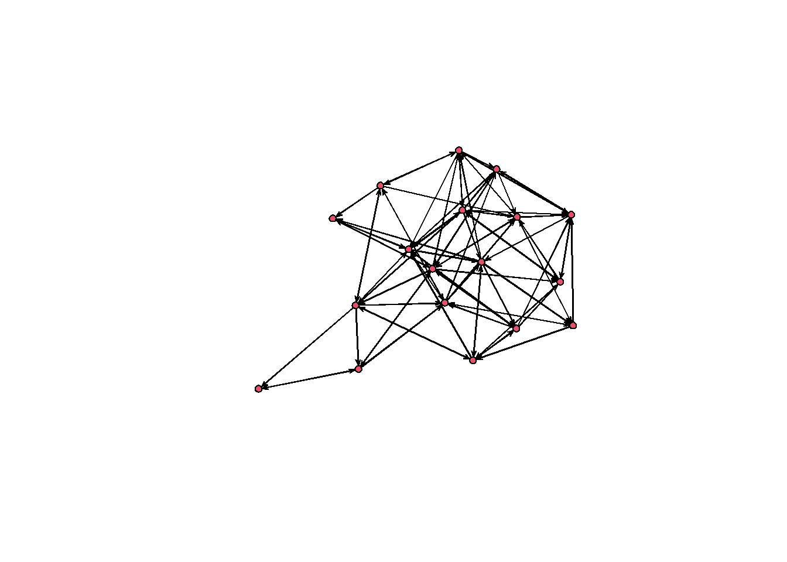

In an earlier post I worked through where ERGM parameter values come from. This post picks up the practical side: how to fit a model to real network data and how to read the coefficients once you have them.
The data are advice ties among 47 teachers in an elementary school, along with a second network of friendship ties among the same teachers. Both are deidentified. The advice network comes from work on how internal competition shapes advice seeking in schools. This data are for one of the schools associated with this Public Administration Review piece: https://onlinelibrary.wiley.com/doi/abs/10.1111/puar.12362
The simplest possible ERGM says that every tie forms independently, with some constant probability. In ERGM syntax that is a model with nothing but an edges term.
mod1 <-ergm(par5 ~ edges)
Starting maximum pseudolikelihood estimation (MPLE):
Obtaining the responsible dyads.
Evaluating the predictor and response matrix.
Maximizing the pseudolikelihood.
Finished MPLE.
Evaluating log-likelihood at the estimate.
summary(mod1)
Call:
ergm(formula = par5 ~ edges)
Maximum Likelihood Results:
Estimate Std. Error MCMC % z value Pr(>|z|)
edges -1.1969 0.1354 0 -8.838 <1e-04 ***
---
Signif. codes: 0 '***' 0.001 '**' 0.01 '*' 0.05 '.' 0.1 ' ' 1
Null Deviance: 424.2 on 306 degrees of freedom
Residual Deviance: 331.5 on 305 degrees of freedom
AIC: 333.5 BIC: 337.3 (Smaller is better. MC Std. Err. = 0)
The edges coefficient is about \(-1.20\). That number is a log-odds, so to get the probability of a tie we run it back through the inverse logit:
exp(-1.1969) / (1+exp(-1.1969))
[1] 0.2320271
Roughly \(0.23\). This value is exactly the density of the network:
gden(par5)
[1] 0.2320261
This is worth sitting with for a moment. In a model where the only thing governing tie formation is a constant probability, the fitted probability has to be the observed density — there is nothing else in the model to explain anything. We can confirm the arithmetic directly:
network.dyadcount(par5) # 47 * 46 possible directed ties
[1] 306
network.edgecount(par5) # observed ties
[1] 71
network.edgecount(par5) /network.dyadcount(par5)
[1] 0.2320261
So the null model recovers the density and nothing more. The question is whether density alone is a good description of this network.
Simulating from the model
One of the genuinely useful things about ERGMs is that a fitted model is a probability distribution over networks. We can draw from it and compare what the model produces against what we actually observed.
sims <-simulate(mod1, nsim =1)plot(sims)

Now compare a handful of statistics between the simulated network and the real one:
The edge counts line up well, which is what we expected — the model was built to match density. But the observed network has considerably more reciprocated ties and more triangles than the model produces. Teachers tend to ask each other for help, and advice ties cluster into triads. A model assuming independence between ties has no way to represent either pattern.
That gap is the whole motivation for everything that follows. We want a model whose simulated networks look like the one we observed, not just in density but in the structural features we care about.
What the statistics actually count
Before adding terms, it helps to see what these network statistics are counting. The counts are hard to eyeball even in a network of 47 nodes, so here is a toy undirected network of 7:
Notice that twopaths are nested inside triangles: every triangle contains twopaths, so the two terms are counting overlapping features of the same edges. That collinearity is not a nuisance detail — it is a large part of why these models can be difficult to fit. The estimation has to separate signal among terms that are structurally entangled with one another.
Dyadic independent terms
Terms are called dyadic independent when the value of one tie does not depend on any other tie. These behave much like predictors in a logistic regression, and the interpretation carries over directly.
Categorical attributes
Teachers in these data either teach a single grade or multiple grades. We can ask whether that affects the ties they send and receive:
The coefficient on outgoing ties is about \(0.51\). As a log-odds this is not very interpretable, so exponentiate it:
exp(mod2a$coef[3])
Warning in .Deprecate_once(msg = "Using x$coef to access the coefficient vector
of an ergm is deprecated. Use coef(x) instead."): Using x$coef to access the
coefficient vector of an ergm is deprecated. Use coef(x) instead.
nodeofactor.GRADE.Other/Multiple
1.662821
About \(1.6\). Holding everything else constant, the odds of sending an advice tie increase by a factor of roughly 1.6 when the sender teaches multiple grades rather than one.
It’s worth verifying that this is really what the coefficient means. The odds that a single-grade teacher sends a tie to another single-grade teacher:
a <-exp(-1.56)a
[1] 0.2101361
And for a multiple-grade sender:
b <-exp(-1.56+0.5085)b
[1] 0.3494132
b / a
[1] 1.662795
Same \(1.66\). Converting to probabilities instead:
exp(-1.56) / (1+exp(-1.56))
[1] 0.1736466
exp(-1.56+0.5085) / (1+exp(-1.56+0.5085))
[1] 0.2589372
Slightly below and slightly above the overall density, respectively.
Homophily
A separate question is whether teachers seek advice from others like themselves. nodematch tests exactly that:
Starting maximum pseudolikelihood estimation (MPLE):
Obtaining the responsible dyads.
Evaluating the predictor and response matrix.
Maximizing the pseudolikelihood.
Finished MPLE.
Evaluating log-likelihood at the estimate.
summary(mod2b)
Call:
ergm(formula = par5 ~ edges + nodematch("GRADE", diff = FALSE))
Maximum Likelihood Results:
Estimate Std. Error MCMC % z value Pr(>|z|)
edges -1.3570 0.1555 0 -8.727 <1e-04 ***
nodematch.GRADE 0.8050 0.3273 0 2.459 0.0139 *
---
Signif. codes: 0 '***' 0.001 '**' 0.01 '*' 0.05 '.' 0.1 ' ' 1
Null Deviance: 424.2 on 306 degrees of freedom
Residual Deviance: 325.8 on 304 degrees of freedom
AIC: 329.8 BIC: 337.2 (Smaller is better. MC Std. Err. = 0)
exp(mod2b$coef[2])
nodematch.GRADE
2.236597
The odds of a tie between two teachers of the same grade are roughly 2.2 times the odds of a tie between teachers of different grades. Setting diff = TRUE would estimate a separate homophily parameter for each grade, which is worth doing when you suspect the tendency varies across categories.
Continuous attributes
Continuous attributes work the same way, with nodeicov and nodeocov for receiving and sending effects. Here the attribute is a teacher’s perception of how competitive their school is internally:
Starting maximum pseudolikelihood estimation (MPLE):
Obtaining the responsible dyads.
Evaluating the predictor and response matrix.
Maximizing the pseudolikelihood.
Finished MPLE.
Evaluating log-likelihood at the estimate.
summary(mod3)
Call:
ergm(formula = par5 ~ edges + nodeicov("COMP.1") + nodeocov("COMP.1"))
Maximum Likelihood Results:
Estimate Std. Error MCMC % z value Pr(>|z|)
edges -1.03659 0.15010 0 -6.906 <1e-04 ***
nodeicov.COMP.1 -0.03911 0.11278 0 -0.347 0.729
nodeocov.COMP.1 -0.54625 0.13250 0 -4.123 <1e-04 ***
---
Signif. codes: 0 '***' 0.001 '**' 0.01 '*' 0.05 '.' 0.1 ' ' 1
Null Deviance: 424.2 on 306 degrees of freedom
Residual Deviance: 311.4 on 303 degrees of freedom
AIC: 317.4 BIC: 328.5 (Smaller is better. MC Std. Err. = 0)
For homophily on a continuous attribute, absdiff uses the absolute difference between sender and receiver — here, years served in the district:
mod4 <-ergm(par5 ~ edges +absdiff("YRSDIST"))
Starting maximum pseudolikelihood estimation (MPLE):
Obtaining the responsible dyads.
Evaluating the predictor and response matrix.
Maximizing the pseudolikelihood.
Finished MPLE.
Evaluating log-likelihood at the estimate.
summary(mod4)
Call:
ergm(formula = par5 ~ edges + absdiff("YRSDIST"))
Maximum Likelihood Results:
Estimate Std. Error MCMC % z value Pr(>|z|)
edges -0.89546 0.22142 0 -4.044 <1e-04 ***
absdiff.YRSDIST -0.02374 0.01443 0 -1.645 0.1 .
---
Signif. codes: 0 '***' 0.001 '**' 0.01 '*' 0.05 '.' 0.1 ' ' 1
Null Deviance: 424.2 on 306 degrees of freedom
Residual Deviance: 328.8 on 304 degrees of freedom
AIC: 332.8 BIC: 340.2 (Smaller is better. MC Std. Err. = 0)
exp(mod4$coef[2])
absdiff.YRSDIST
0.9765443
About \(0.98\), so each additional year of difference in tenure reduces the odds of a tie by roughly 2%. Small per year, but it compounds across the range: a twenty-year gap is a substantial penalty.
Another network as a predictor
One of the most useful terms in practice is edgecov, which uses a second network as a dyadic predictor. Here we ask whether friendship predicts advice seeking.
load("par.friends.RData")# confirm the two networks are ordered identicallyall(row.names(as.sociomatrix(par.friends)) ==row.names(as.sociomatrix(par5)))
[1] TRUE
mod5 <-ergm(par5 ~ edges +edgecov(par.friends))
Starting maximum pseudolikelihood estimation (MPLE):
Obtaining the responsible dyads.
Evaluating the predictor and response matrix.
Maximizing the pseudolikelihood.
Finished MPLE.
Evaluating log-likelihood at the estimate.
summary(mod5)
Call:
ergm(formula = par5 ~ edges + edgecov(par.friends))
Maximum Likelihood Results:
Estimate Std. Error MCMC % z value Pr(>|z|)
edges -2.9704 0.3625 0 -8.194 <1e-04 ***
edgecov.par.friends 2.7441 0.3999 0 6.862 <1e-04 ***
---
Signif. codes: 0 '***' 0.001 '**' 0.01 '*' 0.05 '.' 0.1 ' ' 1
Null Deviance: 424.2 on 306 degrees of freedom
Residual Deviance: 259.0 on 304 degrees of freedom
AIC: 263 BIC: 270.4 (Smaller is better. MC Std. Err. = 0)
exp(mod5$coef[2])
edgecov.par.friends
15.55063
Advice ties are roughly 15 times more likely between teachers who are also friends. That row-name check above matters more than it looks — if the two networks are ordered differently, edgecov will silently compare the wrong dyads and hand you a plausible, wrong answer.
Where this leaves us
Everything so far assumes ties are independent of one another given the covariates. That assumption is what makes these models straightforward to fit and interpret — and it is also what the earlier simulation showed to be wrong. The excess reciprocity and clustering in the observed network are precisely the patterns dyadic independent terms cannot capture.
The next post takes up dyadic dependent terms along with the model degeneracy, and how to check whether a fitted model actually reproduces the network you started with.
![]()